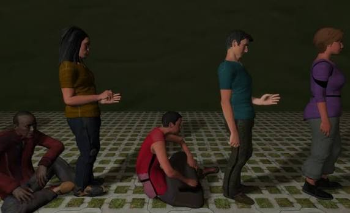

Hajoe Moderegger and Franziska Lamprecht aka ETEAM
The Line
2017

The Line is a computer-generated scene showing a long line of people waiting together. The figures make small everyday movements and actions while they wait. The people and their movements are randomly generated, so the scene is always slightly different. The project truly emulates the 'neutral space' that we may consider lines to be, and it creates this neutral space in a digital art form.